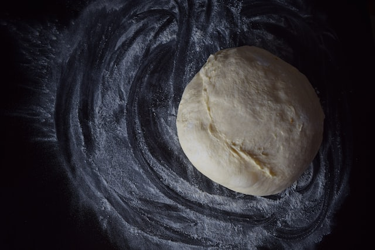

Pizza dough
Return to recipes

Photo by Tamara
Gak on Unsplash
Description
A pizza dough should be made well in advance of eating your pizza. A good pizza is a thing of beauty;
entire Netflix series have been made in honour of it.
Ingredients
650g '00' flour, plus extra for dusting
7g dried easy yeast
2 teaspoons salt
25ml olive oil
375ml warm water
Steps
Adapted from a recipe by Silvana Franco .
Mix flour, yeast and salt in a large bowl or food processor
Stir in the olive oil
Gradually add water, mixing well until the dough is soft
Turn out dough onto a large, floured surface
Knead for at least 5 minutes, until smooth and elastic
Transfer to a clean bowl and cover with a damp cloth
Leave to rise for about 1.5 hours
After the dough has risen, knock back and repeat knead until smooth
Return to bowl and set aside for about 2 days in the fridge